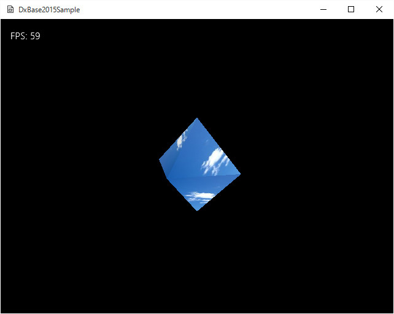

図Simple04a
前項では、頂点に色を付けてグラデーションを表現していましたが、今項ではテクスチャを実装します。
//シェーダリソースビュー（テクスチャリソース）
ComPtr<ID3D11ShaderResourceView> m_ShaderResView;
void GameObject::CreateShaderResView(){
//テクスチャ作成
DirectX::TexMetadata metadata;
DirectX::ScratchImage image;
ThrowIfFailed(
DirectX::LoadFromWICFile(m_TextureFileName.c_str(), 0, &metadata, image),
L"テクスチャの読み込みに失敗しました",
m_TextureFileName,
L"GameObject::CreateShaderResView()"
);
//デバイスとコンテキストインターフェイスの取得
//デバイスの取得
auto Dev = App::GetApp()->GetDeviceResources();
ID3D11Device* pDx11Device = Dev->GetD3DDevice();
ID3D11DeviceContext* pID3D11DeviceContex = Dev->GetD3DDeviceContext();
//ミューテックス
std::mutex Mutex;
Util::DemandCreate(m_ShaderResView, Mutex,
[&](ID3D11ShaderResourceView** pResult) -> HRESULT
{
// 画像からシェーダリソースViewの作成
return ThrowIfFailed(
CreateShaderResourceView(pDx11Device,
image.GetImages(),
image.GetImageCount(),
metadata,
pResult),
L"シェーダーリソースビューを作成できません",
L"if( FAILED( CreateShaderResourceView() ) )",
L"Texture::Impl::Impl()"
);
});
}
#include "PRTexture3D.hlsli"
Texture2D<float4> SimpleTexture : register(t0);
SamplerState SimpleSampler : register(s0);
//--------------------------------------------------------------------------------------
// Pixel Shader
//--------------------------------------------------------------------------------------
float4 main(PixelShaderInput input) : SV_TARGET
{
//ライトの向きを得る
float3 LightDirection = normalize(float3(LightDir.xyz));
float3 InputNormal = normalize(input.Normal);
//ライトによるピクセルの色を決定
float4 LightColor = saturate(dot(InputNormal, LightDirection) + float4(0.7, 0.7, 0.7, 1.0));
//ライトの透明処理はなし
LightColor.a = 1;
//テクスチャと合わせる
float4 TextureColor = SimpleTexture.Sample(SimpleSampler, input.TexCoord);
//テクスチャ色とライト色を合成
return TextureColor *LightColor;
}
void GameObject::Draw(){
//中略
//ストライドとオフセット
UINT stride = sizeof(VertexPositionNormalTexture);
UINT offset = 0;
//頂点バッファの設定
pID3D11DeviceContext->IASetVertexBuffers(0, 1,
m_VertexBuffer.GetAddressOf(), &stride, &offset);
//中略
//塗りつぶし処理（今回の画像はJPEGなので透明にしない）
pID3D11DeviceContext->OMSetBlendState(RenderStatePtr->GetOpaque(),
nullptr, 0xffffffff);
//中略
//リニアサンプラーを設定
ID3D11SamplerState* samplerState = RenderStatePtr->GetLinearClamp();
pID3D11DeviceContext->PSSetSamplers(0, 1, &samplerState);
//テクスチャを設定
pID3D11DeviceContext->PSSetShaderResources(0, 1, m_ShaderResView.GetAddressOf());
//中略
}